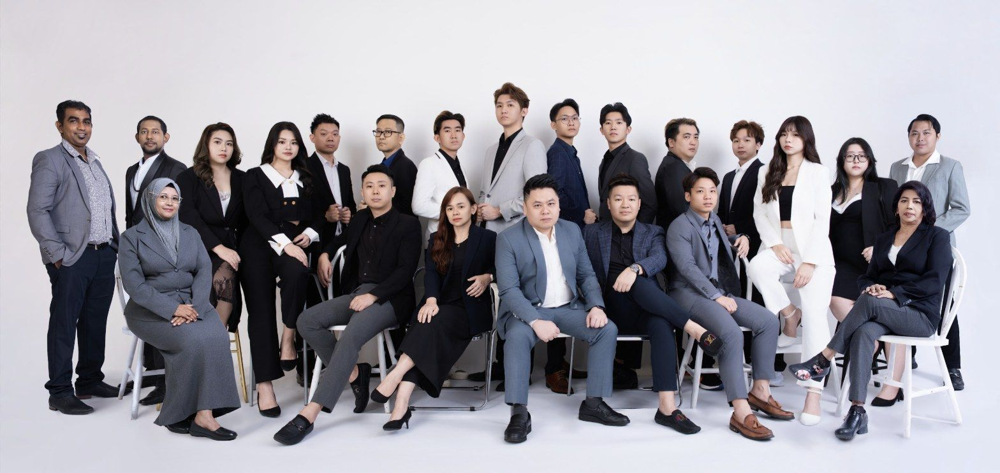

从上班族到自由工作者，专业形象照能为不同身份的你带来实际帮助——也帮你判断自己是否真的需要。From working professionals to freelancers, a professional headshot can genuinely help — and here's how to tell whether you need one.

问自己三个问题：别人会不会在网上先看到你的照片？你现在的照片是不是几年前的、或是随手拍的？你的工作是否靠信任成交？只要有一个答案是“是”，专业形象照通常就值得。Ask yourself three questions: will people see your photo online before meeting you? Is your current photo years old or a casual snapshot? Does your work depend on trust? If any answer is yes, a professional headshot is usually worth it.
RM99 的 Business Portrait Express 约 10 分钟、1 张精修软档，适合快速需要一张专业照片；RM299 的 Business Portrait 约 30 分钟，含化妆与造型、1 套服装，适合 LinkedIn、官网和个人品牌。以上为限时优惠价格，实际价格请以预约时门店最新公告为准。想看完整比较，请看 RM99 vs RM299 形象照 和 形象照价格指南。The RM99 Business Portrait Express is about 10 minutes with 1 retouched softcopy — ideal when you need a professional photo quickly. The RM299 Business Portrait is about 30 minutes with makeup, styling and 1 outfit — better for LinkedIn, websites and personal branding. Limited-time pricing; please confirm when booking. See the RM99 vs RM299 comparison and the headshot price guide.
无论你是哪一种身份，一张专业的形象照都是别人认识你的第一印象。投资一次专业拍摄，能长期用在履历、社交平台与官方资料上，性价比其实很高。拍摄前可以先看 拍摄前准备清单，男生也可以参考 男生需要化妆吗。Whatever your role, a professional headshot is often the first impression people form of you, and one session can serve your resume, social profiles and official materials for a long time. Read the preparation guide before you shoot; men can also see makeup for men.
立即预约你的拍摄。Book your session today.